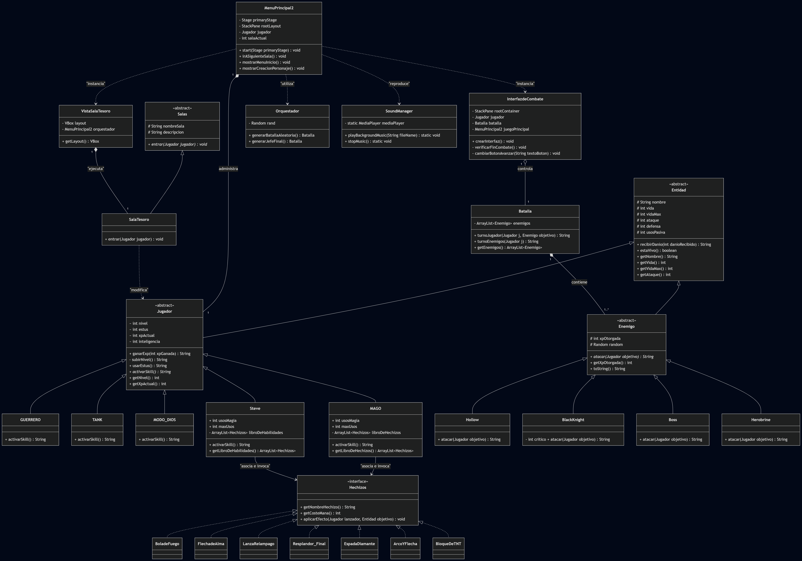
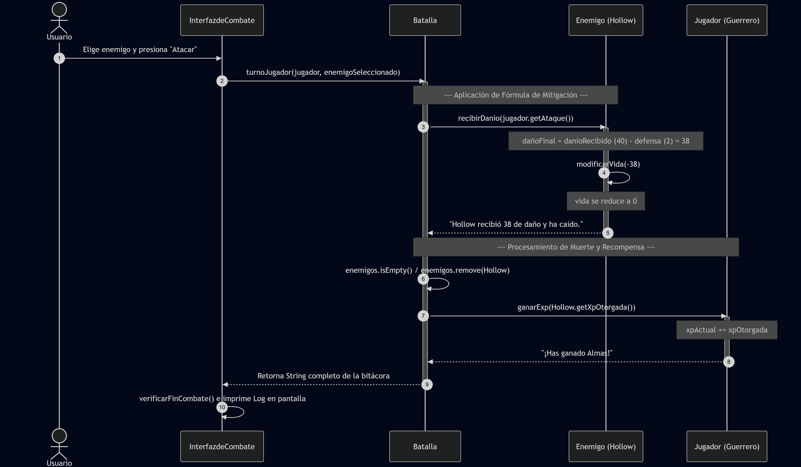
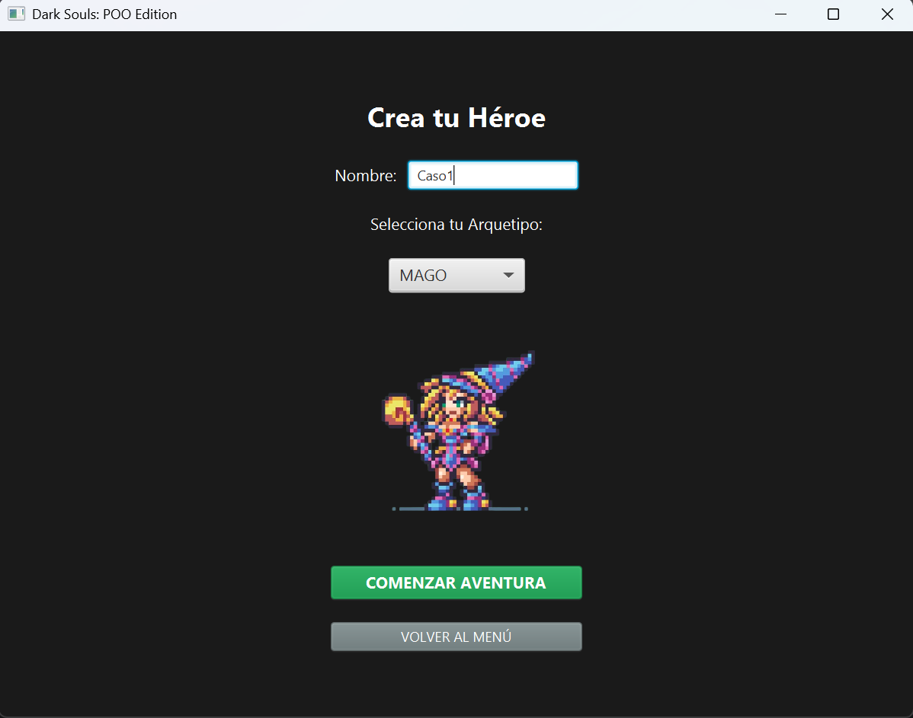
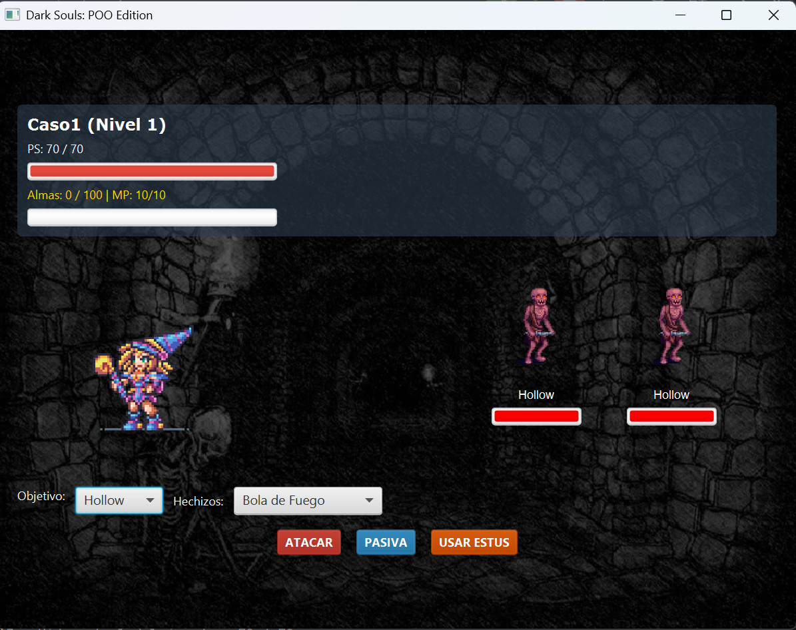
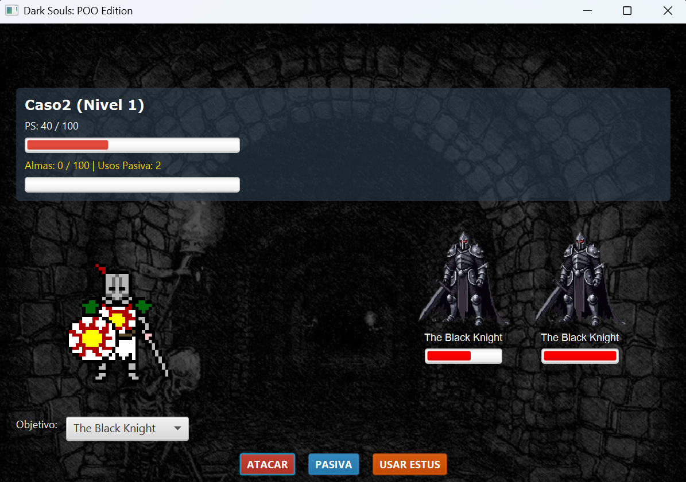

Junio 2026
El estudio de la Programación Orientada a Objetos suele presentar una alta curva de dificultad debido a la abstracción de sus componentes pilares. Para nosotros, el desarrollo de este proyecto fue la clave para superar esta barrera y comprender a fondo el lenguaje Java. Al tener que implementar directamente las jerarquías de personajes, clases y habilidades, logramos visualizar de forma inmediata la ejecución de la arquitectura de software, consolidando nuestro propio aprendizaje técnico a través de la práctica pura.
El problema se aborda modelando un ecosistema de software delimitado por la arquitectura del videojuego. Los entes principales que participan dentro del dominio del problema son las entidades lógicas abstractas (Entidad), subdivididas mediante herencia en personajes controlables (Jugador: GUERRERO, MAGO, TANK, STEVE) y amenazas automatizadas (Enemigo). Estos entes encapsulan estados (atributos como vida, ataque y recursos) y exponen comportamientos dinámicos polimórficos a través de un sistema de resolución de turnos y aplicación de hechizos (Hechizos).
El sistema se define como el motor lógico y gráfico cerrado que gestiona el ciclo de juego. Está compuesto por un subsistema de control de flujo (MenuPrincipal2), un componente generativo estocástico encargado de la progresión estructural (Orquestador) y un módulo de renderizado visual reactivo basado en eventos (InterfazdeCombate).
Las interacciones con el medio externo son de carácter periférico y de control: el sistema recibe estímulos asíncronos del usuario (entradas por teclado y ratón) para la toma de decisiones estratégicas, y en respuesta, altera el entorno externo mediante la actualización en tiempo real de la interfaz gráfica y la emisión de señales acústicas administradas por el hardware de audio (SoundManager).
A continuación, se presentan tres casos de uso esenciales que modelan el comportamiento esperado del sistema. Estos escenarios operan, a su vez, como la base estructural para las pruebas de validación y verificación del correcto desempeño del software.
GUERRERO, MAGO, TANK, STEVE). El sistema debe instanciar la clase concreta correspondiente e inicializar correctamente los atributos heredados de Entidad (vida, ataque, defensa) según el balance de la clase.libroDeHechizos contenga los 4 hechizos iniciales.Batalla.java. Un test introduce un Jugador con ataque 40 y un enemigo Hollow con 30 de vida y 2 de defensa. Tras el turno, se comprueba que el daño final sea exactamente 38, que la salud del enemigo quede en 0 y que se gatille el método ganarExp().Orquestador o el flujo de MenuPrincipal2 genera de manera aleatoria el tipo de la siguiente sala (Combate o SalaTesoro). Si es tesoro, altera los atributos del jugador (ej. incrementar frascos de estus); si es combate, instancia una nueva horda.SoundManager según el contexto (battle_theme.mp3 o treasure_theme.mp3) y que el contador salaActual se incremente consistentemente en +1.



En estas imágenes se logra apreciar...

En esta imagen se logra ver el combate...